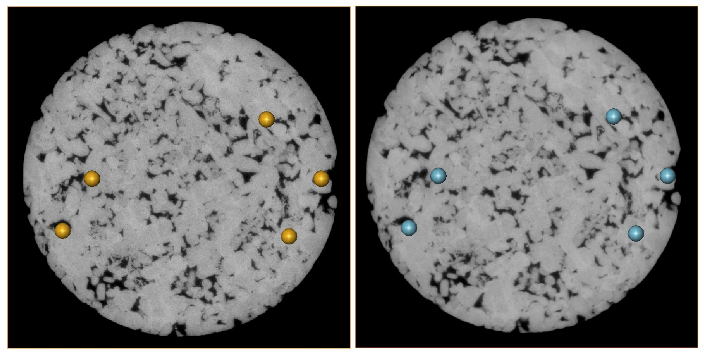
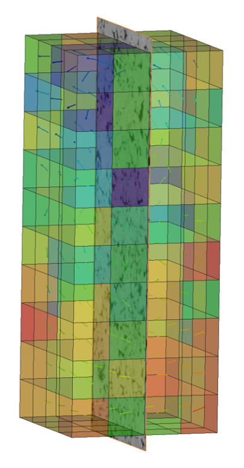
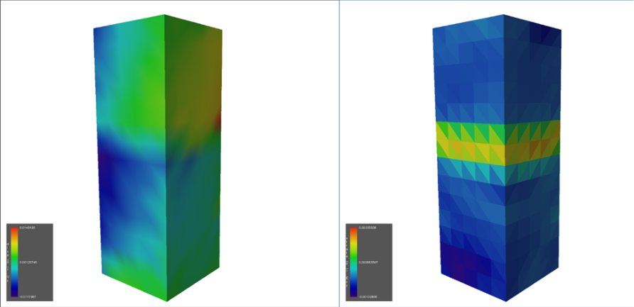
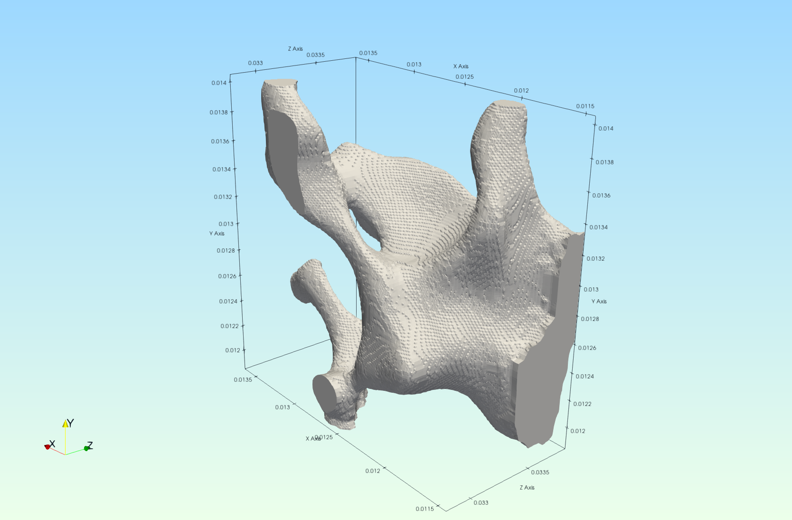
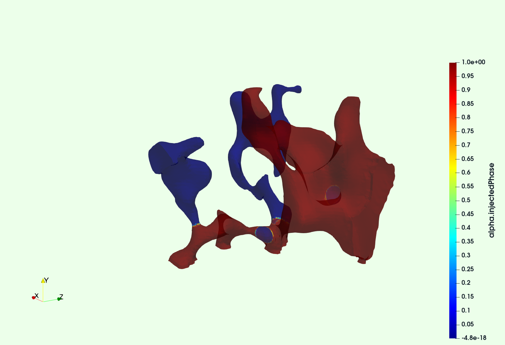
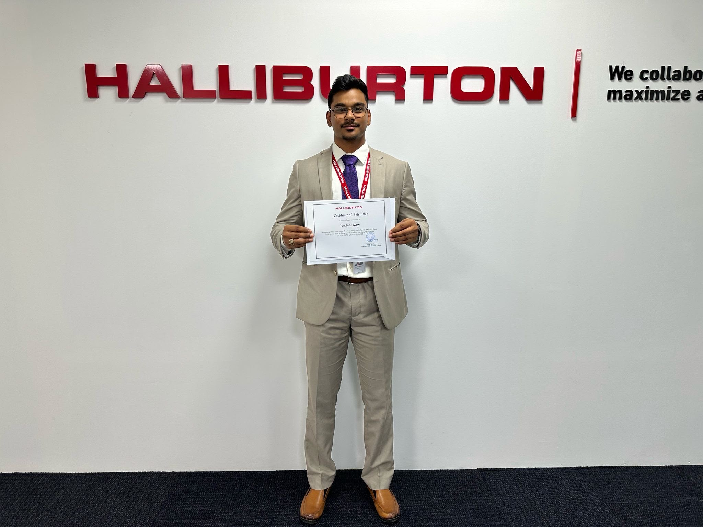

I study how carbonate rocks deform, fracture, and transmit fluids under reservoir stress — combining triaxial experiments, µCT imaging and digital volume correlation with machine learning for geoscience imagery. My research focus is moving toward geological CO₂ storage (CCS), where the poro-mechanical behaviour of carbonates is a central open question.
Experimental rock deformation · digital rock physics · machine learning for geoscience
Carbonate reservoirs host most of the Middle East's hydrocarbon resources — and are increasingly candidates for CO₂ storage — yet how their pore structure, strength and permeability co-evolve under changing stress is far less understood than for sandstones. My thesis addresses this gap experimentally: I designed and executed triaxial compression experiments on carbonate cores with stage-by-stage fluid-flow measurements, then used µCT imaging and digital volume correlation (DVC) to map internal strain fields and link them to measured permeability changes under reservoir-representative stress conditions.
Where most published work relies on uniaxial strain, sandstone lithologies, and bulk measurements, this study applies true triaxial stress paths to carbonates and resolves what happens inside the core: each sample is characterized by helium porosimetry and liquid permeability testing, imaged by µCT before and after compression, analyzed with digital volume correlation to map 3D displacement and strain localization, and finally meshed at the pore scale for volume-of-fluid CFD simulation of oil–brine displacement through the deformed pore space.
The headline result: stress measurably alters porosity and permeability, preferential flow paths reorganize after compression, and the experimental observations agree with the pore-scale simulations — a quantitative experimental–digital link between deformation and flow that improves reservoir prediction.
This work continues in collaboration with the Digital Rock Physics & Geomechanics group at TAMUQ (Dr. Thomas Seers, Dr. Mohamed Fadlelmula), extending the dataset to additional carbonate lithologies and stress regimes toward a generalized poro-mechanical framework for Middle East reservoir carbonates. The same questions — seal integrity, injection-induced stress change, permeability evolution under load — are the core geomechanics problems of CO₂ storage, which is the direction I am taking this research next.





Figures from the 2026 Undergraduate Research Scholars presentation, with team members M. Bouhssas, M. Tayara, N. Yehya and M. Mansour.
Full list on Google Scholar

Open tools and analyses — repositories added as they are published.
I am currently preparing PhD applications in CO₂ storage geomechanics and am glad to discuss research collaboration, my carbonate dataset, or graduate opportunities.